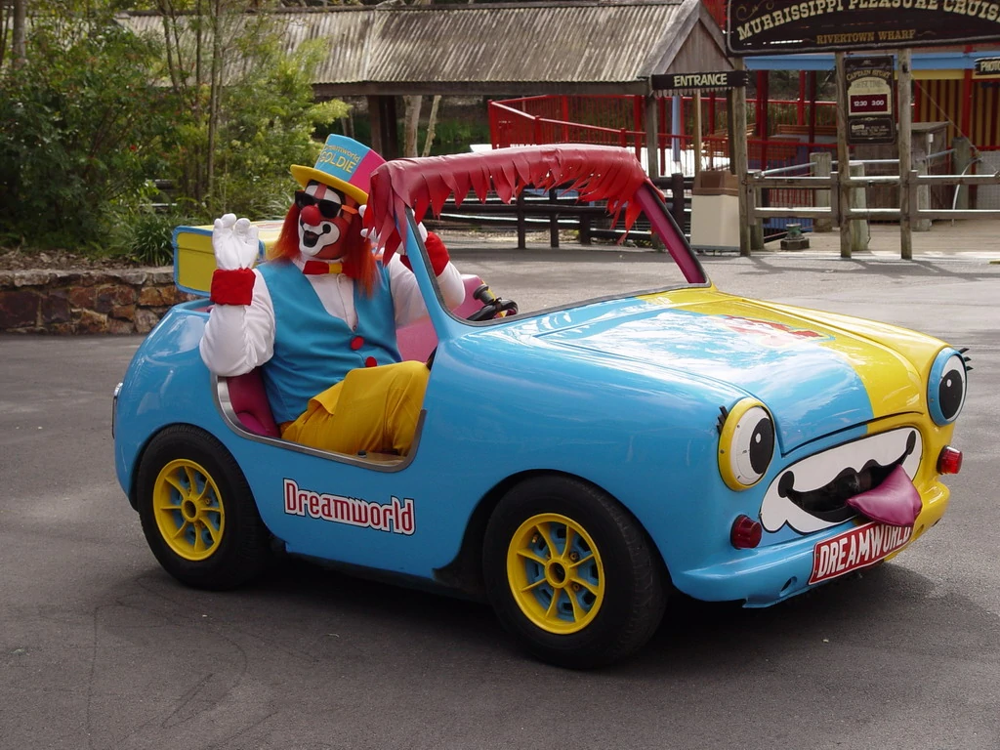

The first time I went to see the circus, somebody died. His little car exploded. The joke car exploded on him.
Are you being serious right now?
Seriously. Yeah. My parents had to — everybody ran out. It was terrifying. It was the only time I’ve ever been to the circus.
I said those things. But I actually made the whole thing up. It’s coming back to haunt me. I said it on some show. It was really early in the morning the day after the New York premiere. Someone asked me what my experience with the circus was and I was like, I have nothing interesting to say. I don’t know why I said that!